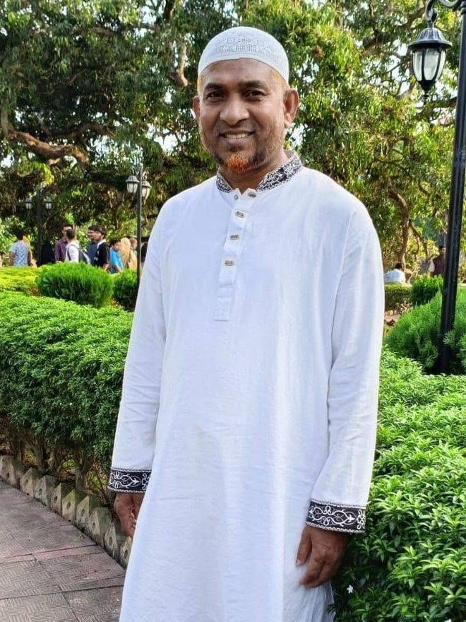
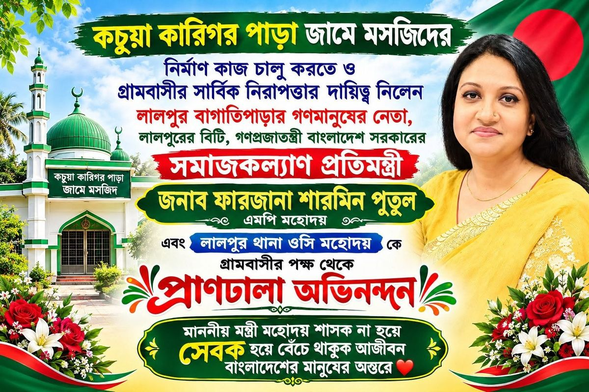

সমাজ কল্যাণ যুব সংঘ
কচুয়া কারিগর পাড়া
পাড়ার মানুষের পাশে, পাড়ার তরুণদের হাতে। একসাথে পথ চলার এই ঠিকানায় আপনাকে স্বাগতম।

পাড়ার মানুষের পাশে, পাড়ার তরুণদের হাতে। একসাথে পথ চলার এই ঠিকানায় আপনাকে স্বাগতম।
লালপুরের আলোচনা সভায় যুব সংগঠনের তরুণরা একসাথে।

উপজেলা প্রশাসন ও যুব উন্নয়ন অধিদপ্তর, লালপুর, নাটোরের আয়োজনে যুব সংগঠনের সনদ বিতরণ ও যুব ঋণের চেক হস্তান্তর।

অতিথিদের হাত থেকে খাম গ্রহণের মুহূর্ত।

সবার উপস্থিতিতে হাতে তুলে দেওয়া হচ্ছে সনদ ও চেক।

কার্যালয়ে সনদপত্র হাতে তুলে নেওয়ার মুহূর্ত।

সদস্য ও শুভানুধ্যায়ীদের সঙ্গে এক ফ্রেমে।

আখ বোঝাই ট্রলি আর ট্রাক্টরের সারিতে ভরা একটি দিন।

কচুয়া কারিগর পাড়া সমাজ কল্যাণ যুব সংঘ যুব উন্নয়ন অধিদপ্তর থেকে নিবন্ধন সনদপ্রাপ্ত। যুব সংগঠন (নিবন্ধন এবং পরিচালনা) আইন, ২০১৫ এর অধীনে এই সনদ প্রদান করা হয়েছে।



সভাপতি, কচুয়া কারিগর পাড়া সমাজ কল্যাণ যুব সংঘ
কচুয়া কারিগর পাড়া জামে মসজিদের নির্মাণ কাজ চালু করতে ও গ্রামবাসীর সার্বিক নিরাপত্তার দায়িত্ব নেওয়ায় গ্রামবাসীর পক্ষ থেকে অভিনন্দন জানানো হয়েছে।

কচুয়া কারিগর পাড়া সমাজ কল্যাণ যুব সংঘ পাড়ার তরুণদের নিয়ে গড়া একটি সামাজিক সংগঠন। মানুষের বিপদে পাশে দাঁড়ানো, শিক্ষা ও সচেতনতা বাড়ানো এবং পাড়ার উন্নয়নে সম্মিলিতভাবে কাজ করাই আমাদের উদ্দেশ্য।
সংঘের প্রতিটি কাজ সদস্যদের আলোচনা ও সম্মতির ভিত্তিতে পরিচালিত হয়।
এই ছয়টি নীতিকে সামনে রেখে সংঘের সব কাজ পরিচালিত হয়।
পাড়ার সবাই ধর্ম, বয়স ও পেশা নির্বিশেষে একসাথে থাকবে। মতের ভিন্নতা থাকলেও সম্পর্কের বন্ধন অটুট রাখাই আমাদের প্রথম শর্ত।
বিপদে-আপদে, অসুস্থতায় ও অভাবের সময় অসহায় পরিবারের পাশে দাঁড়ানো সংঘের প্রতিটি সদস্যের নৈতিক দায়িত্ব।
শিশু ও কিশোরদের পড়াশোনায় উৎসাহ দেওয়া এবং স্বাস্থ্য, নিরাপত্তা ও সামাজিক বিষয়ে সচেতনতা বাড়ানো।
সংঘের আয়-ব্যয়ের হিসাব নিয়মিত সদস্যদের সামনে উপস্থাপন করা হবে এবং সব সিদ্ধান্ত নেওয়া হবে সম্মিলিত আলোচনার মাধ্যমে।
পাড়ার পথঘাট, জলাশয় ও খেলার মাঠ পরিচ্ছন্ন রাখতে নিয়মিত উদ্যোগ নেওয়া এবং বছরে অন্তত একবার বৃক্ষরোপণ করা।
তরুণদের দায়িত্ব দিয়ে নেতৃত্বে এগিয়ে আনা, যাতে আগামী দিনের পাড়া তাদের হাতেই আরও সুন্দর হয়ে ওঠে।
সদস্যদের নাম, পদবী, মোবাইল নম্বর ও পেশা
যেদিন আমরা প্রথম একসাথে বসে সংঘ গড়ার সিদ্ধান্ত নিয়েছিলাম, সেদিনের কিছু ছবি। ছবিতে ক্লিক করে বড় করে দেখুন।
গত ঈদের দিনে সংঘের উদ্যোগে পাড়ার শিশু-কিশোরদের নিয়ে খেলাধুলার আয়োজন করা হয়। আমগাছের ছায়ায় খোলা জায়গায় সবাই একসাথে জড়ো হয়, আর ঈদের আনন্দ ছড়িয়ে পড়ে ছোট-বড় সবার মাঝে।
সংঘের সদস্যরা একই রঙের টি-শার্ট পরে পুরো আয়োজনের দেখাশোনা করেন। ছোটদের মুখের হাসিই আমাদের সবচেয়ে বড় প্রাপ্তি, আর এভাবেই সমাজের পাশে থাকার চেষ্টা আমরা চালিয়ে যেতে চাই।
উপজেলা প্রশাসন ও যুব উন্নয়ন অধিদপ্তর, লালপুর, নাটোর-এর আয়োজনে অনুষ্ঠিত আলোচনা সভা ও যুব সংগঠনের সনদ বিতরণ অনুষ্ঠানের ছবি। ছবিতে ক্লিক করে বড় করে দেখুন।
সংঘের অনুষ্ঠান ও পাড়ার কিছু মুহূর্তের ছবি। ছবিতে ক্লিক করে বড় করে দেখুন।